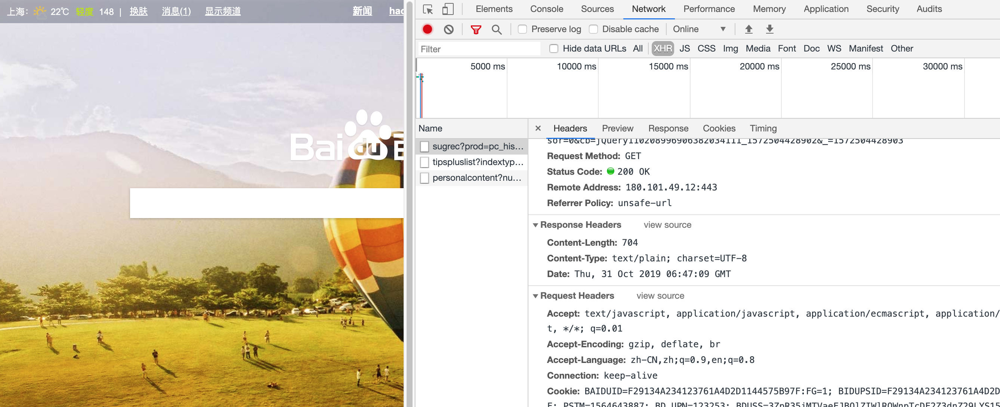
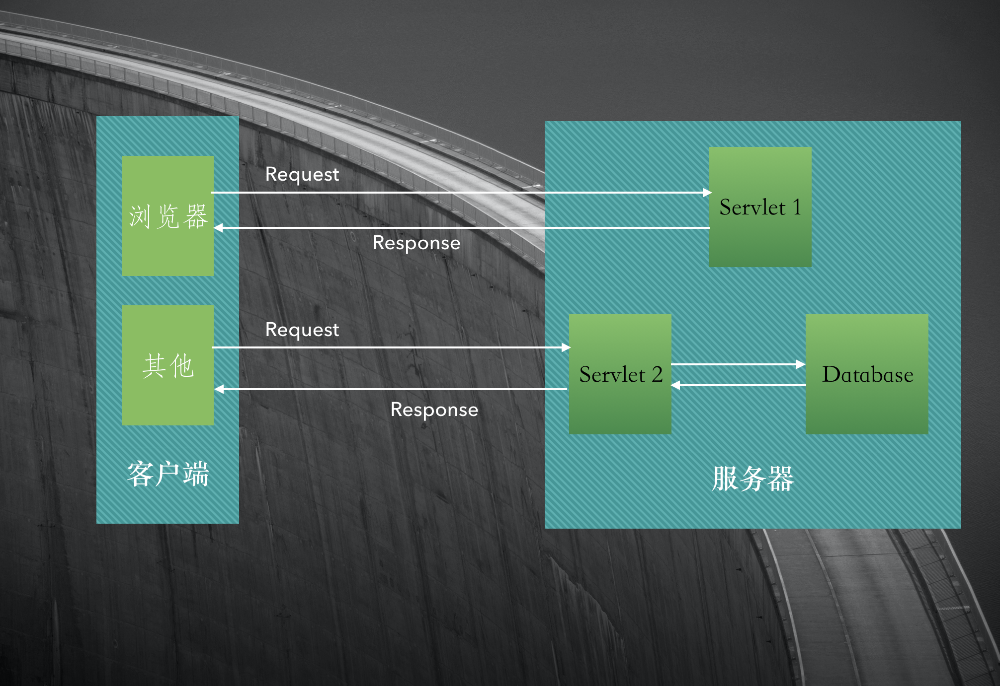
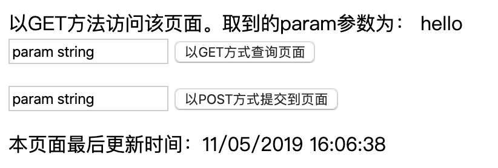

Servlet剖析

网站展现页面分动、静态, 最早期的动态网站使用CGI实现页面的动态生成，比如访问www.aaa.com/cgi/hell.cgi，通过执行Web服务器调用执行CGI目录下的hello.cgi程序，动态生成HTML页面输出，最后由WEB服务器通过网络将生成的HTML页面返回给客户端。CGI程序在服务器端执行，并可以和Web服务器在同一个主机上，最流行的CGI语言是Perl和Shell脚本，也可以使用C/C++以及Java等语言进行编写。
虽然CGI实现了网站的动态性，但是CGI存在很多不足：
- 需要为每个请求启动一个操作CGI程序的系统进程
- 需要为每个请求加载和运行一个CGI程序
- 需要重复编写处理网络协议的代码
如果使用Java编写CGI程序，执行效率更低下，因为要执行一个Java编写的CGI程序，除了首先需要启动一个系统进程之外，还要在进程中启动一个JVM，然后才能在JVM中执行Java CGI程序，为了解决CGI这个问题，Java推出了Servlet规范，只需要启动一个操作系统进程以及一个JVM映象即可。
Sun公司在上世纪90年代末就发布了基于Servlet的Web服务器。为了确保加载的各个类之间不起冲突，已经建立了一个称为Java Servlet API(应用程序接口)的编码标准。现在基本上所有的服务器都遵循这个编码标准，所以Servlet有很好的移植性。
现在的Web服务器（比如Tomcat）已经集成了Servlet容器，Servlet容器负责管理加载、卸载、重新加载和执行Servlet代码等操作。
由于Tomcat实现了HTTP传协议的服务器软件，当浏览器请求http://...时，浏览器提交的请求是遵循HTTP协议的文本，这段文本由服务器Tomcat接收并解析，封装成了HpptServletRequest类型的request对象。所有的HTTP头数据都可以通过request相应的方法查询到。
Tomcat同时把输出流封装成HpptServletResponse类型的response对象，通过设置response属性就可以控制输出的内容。然后Tomcat把request、response作为参数，调用Servlet的相应方法，例如doGet(request, response)、 doPost(request, response)
Servlet是一种实现了javax.servlet.Servlet接口的类。Servlet接口规定了特定方法来处理特定的请求。开发者只需要实现Servlet的相关方法，用户访问Web程序时，Tomcat会计用这些方法完成业务处理。

编写Servlet
直接实现javax.servlet.Servlet接口比较麻烦，在JDK的javax.servlet., javax.servlet.http.包下提供了对Servlet的支持，比如HttpServlet
示例：
// -- com.daliu.servlet.FirstServlet.java
package com.daliu.servlet;
import javax.servlet.ServletException;
import javax.servlet.http.HttpServlet;
import javax.servlet.http.HttpServletRequest;
import javax.servlet.http.HttpServletResponse;
import java.io.IOException;
import java.io.PrintWriter;
public class FirstServlet extends HttpServlet {
@Override
/**
* 以GET方式访问页面时执行该函数
* 执行doGet前会先执行getLastModified，如果浏览器发现getLastModified返回的数值与上次访问时返回的数值相同
* 则认为该文档没有更新，浏览器采用缓存而不执行doGet
* 如果getLastModified返回-1, 则认为是时刻更新的，总是执行该函数
*/
protected void doGet(HttpServletRequest req, HttpServletResponse resp) throws ServletException, IOException {
this.log("执行doGet...方法"); // 调用Servlet自带的日志输出信息到控制台
this.execute(req, resp);
}
@Override
/**
* 返回该Servlet生成的文档的更新时间。对GET方式访问有效
* 返回的时间为相对于1970年1月1日08:00:00的毫秒数
* 如果为-1则认为是实时更新
* 默认为-1
*/
protected long getLastModified(HttpServletRequest req) {
this.log("执行getLastModified方法...");
return -1;
// return super.getLastModified(req);
}
@Override
protected void doPost(HttpServletRequest req, HttpServletResponse resp) throws ServletException, IOException {
this.log("执行doPost方法...");
this.execute(req, resp);
}
private void execute(HttpServletRequest request, HttpServletResponse response) throws ServletException, IOException {
response.setCharacterEncoding("UTF-8"); // 设置response编码方式
request.setCharacterEncoding("UTF-8"); // 设置request编码方式
// 访问该Servlet的URI:
String requestURI = request.getRequestURI();
// 请求方式，GET 或者 POST
String method = request.getMethod();
// 获取客户端提交的参数param值
String param = request.getParameter("param");
response.setContentType("text/html"); // 设置响应文档类型为HTML类型
PrintWriter out = response.getWriter();
out.println("<!DOCTYPE HTML PUBLIC \"-//W3C//DTD HTML 4.0.1 Transitional//EN\"");
out.println("<html>");
out.println(" <body>");
out.println("以" + method + "方法访问该页面。取到的param参数为： " + param + "<br />");
out.println("<form action=" + requestURI + " method='get'>");
out.println(" <input type='text' name='param' value='param string' />");
out.println(" <input type='submit' value='以GET方式查询页面'" + requestURI + "<br />");
out.println("</form>");
out.println("<form action='" + requestURI + "' method=' post'>");
out.println(" <input type='text' name='param' value='param string' />");
out.println(" <input type='submit' value='以POST方式提交到页面'" + requestURI + "' />");
out.println("</form>");
// 由客户端浏览器读取该文档的更新时间
out.println("<script>document.write('本页面最后更新时间：'+ document.lastModified); </script>");
out.println(" </body");
out.println("</html>");
out.flush();
out.close();
}
}
// -- WEB-INF/web.xml --
<?xml version="1.0" encoding="UTF-8"?>
<web-app xmlns="http://java.sun.com/xml/ns/javaee"
xmlns:xsi="http://www.w3.org/2001/XMLSchema-instance"
xsi:schemaLocation="http://java.sun.com/xml/ns/javaee
http://java.sun.com/xml/ns/javaee/web-app_4_0.xsd"
version="4.0">
<servlet>
<servlet-name>FirstServlet</servlet-name>
<servlet-class>com.daliu.servlet.FirstServlet</servlet-class>
<!--Servlet中可以使用
getServletContext().getInitParam(String paramName)
获取配置的初始化参数值-->
<init-param>
<param-name>message</param-name>
<param-value>Welcome to FirstServlet</param-value>
</init-param>
<init-param>
<param-name>encoding</param-name>
<param-value>utf-8</param-value>
</init-param>
<!--load-on-startup配置该Servlet的加载方式，可选值0或1
如果配置为1，Tomcat会在启动时加载Servlet，
否则，Tomcat会在第一次请求该Servlet时才加载此Servlet-->
<load-on-startup>1</load-on-startup>
</servlet>
<servlet-mapping>
<servlet-name>FirstServlet</servlet-name>
<url-pattern>/servlet/FirstServlet</url-pattern>
</servlet-mapping>
</web-app>

*与?，其中*代表任意长度的字符串,?代表任意字符
比如
<servlet-mappine>
<servlet-name>FirstServlet</servlet-name>
<url-pattern>/servlet/FirstServlet</url-pattern>
<url-pattern>/servlet/FirstServlet.asp</url-pattern>
<url-pattern>/servlet/FirstServlet.jsp</url-pattern>
<url-pattern>/servlet/FirstServlet.php</url-pattern>
<url-pattern>/servlet/FirstServlet.aspx</url-pattern>
</servlet-mapping>
在web.xml中可以配置多个servlet:
<?xml version="1.0" encoding="UTF-8"?>
<web-app xmlns="http://java.sun.com/xml/ns/javaee"
xmlns:xsi="http://www.w3.org/2001/XMLSchema-instance"
xsi:schemaLocation="http://java.sun.com/xml/ns/javaee
http://java.sun.com/xml/ns/javaee/web-app_4_0.xsd"
version="4.0">
<servlet>
<servlet-name>FirstServlet</servlet-name>
<servlet-class>com.daliu.servlet.FirstServlet</servlet-class>
<!--Servlet中可以使用
getServletContext().getInitParam(String paramName)
获取配置的初始化参数值-->
<init-param>
<param-name>message</param-name>
<param-value>Welcome to FirstServlet</param-value>
</init-param>
<init-param>
<param-name>encoding</param-name>
<param-value>utf-8</param-value>
</init-param>
<!--load-on-startup配置该Servlet的加载方式，可选值0或1
如果配置为1，Tomcat会在启动时加载Servlet，
否则，Tomcat会在第一次请求该Servlet时才加载此Servlet-->
<load-on-startup>1</load-on-startup>
</servlet>
<servlet-mapping>
<servlet-name>FirstServlet</servlet-name>
<url-pattern>/servlet/FirstServlet</url-pattern>
</servlet-mapping>
<!--配置第2个servlet-->
<servlet>
<servlet-name>HelloServlet</servlet-name>
<servlet-class>com.daliu.servlet.HelloServlet</servlet-class>
</servlet>
<servlet-mapping>
<servlet-name>HelloServlet</servlet-name>
<url-pattern>/servlet/HelloServlet</url-pattern>
</servlet-mapping>
</web-app>